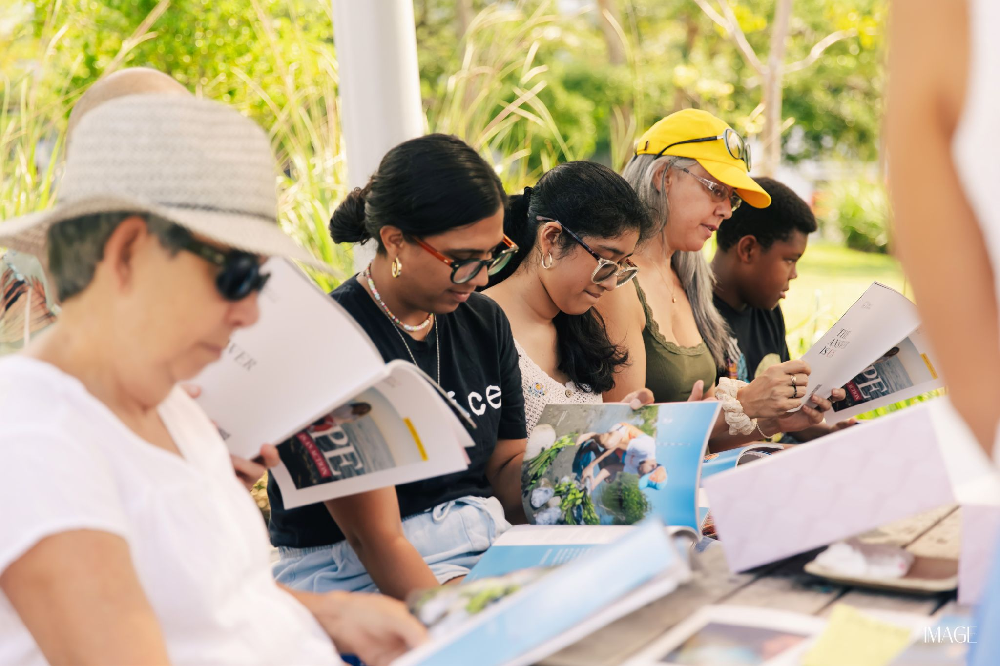
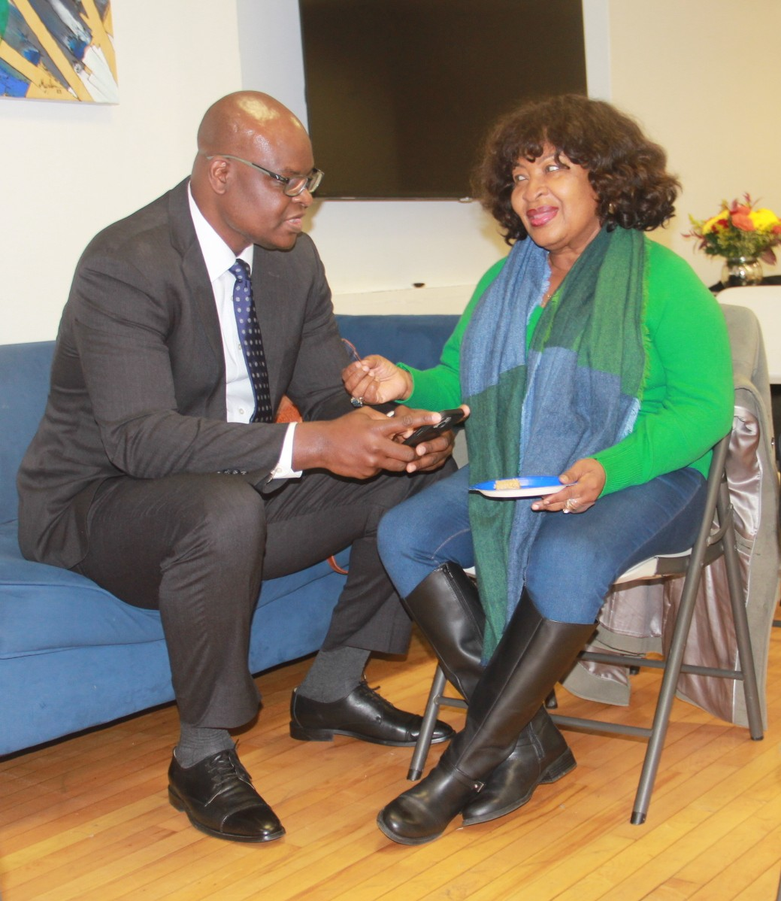
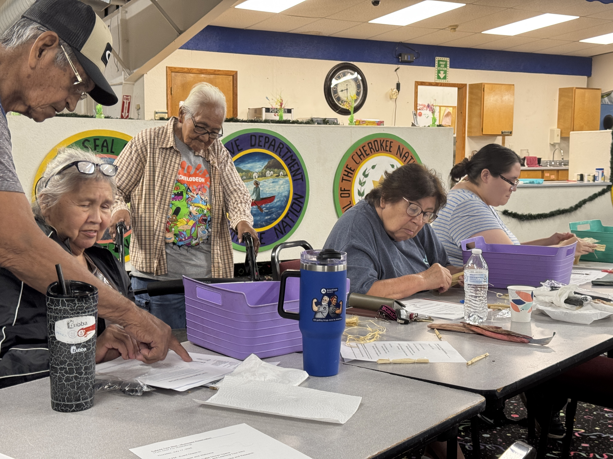
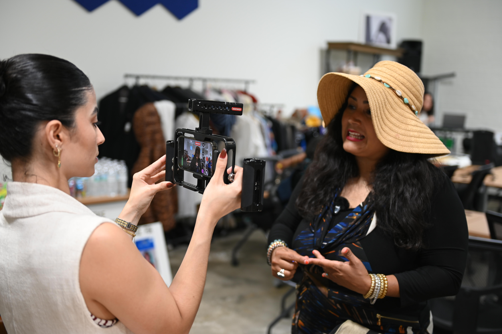

|
|
|
|
|
Across an evolving media landscape where public confidence in civic institutions faces historic headwinds, community trust remains the defining asset of impactful journalism. According to findings from the Pew-Knight Initiative, 80% of Americans say local news outlets are vital to their communities' well-being, even as consumption habits shift rapidly toward digital and community-anchored channels. Yet trust is no longer passive. Audiences are demanding direct, responsive relationships with newsrooms that reflect their daily realities.
For institutional philanthropy and sector leaders, that newsroom-audience relationship represents more than goodwill. A comprehensive 2026 evidence review launched by the Local News Research Hub demonstrates that community-engaged local reporting directly drives voter participation, neighborhood belonging, and civic health. Funders are taking note: according to Press Forward, nearly 70% of its network funders have increased their financial commitments to local news since joining the coalition.
At the 2026 LION Sustainability Awards in San Diego, that reality took center stage in the Community Engagement category. Across multiple revenue tiers, nominated newsrooms demonstrated that community engagement is not a series of one-off outreach campaigns; instead, it is a permanent operational infrastructure. In this month’s issue of the CCM Spotlight on Community media, we spoke with several of these nominees to try to surface common practices and lessons. By examining the daily practices of these publishers, we found three things that seem critical for how independent newsrooms turn listening into lasting civic power.
|
|
 Community members and readers engage with print journalism outdoors during an Impact.Edition "Live Reading Picnic Under the Trees" in South Florida. Photo Courtesy of Impact.Edition.
|
Operationalize Listening as a Permanent Function
The most resilient community newsrooms do not treat engagement as an afterthought once a story is released. Instead, they assign dedicated operational capacity to listening as an ongoing, sustainable journalistic function.
At Caribbean Television Network (CTN), winner of the Community Engagement Award in the Micro/Small Revenue Tier, engagement is established as a formal beat in its own right, managed by a dedicated Communications & Outreach Coordinator. Operating from Boston as an international reporting network producing trilingual service journalism across seven countries, CTN feeds inquiries and tips gathered through WhatsApp, newsletters, and ongoing sessions with local churches and civic groups directly into its weekly editorial docket. From there, reporting moves through a synchronized workflow producing simultaneous assets in Haitian Creole, French, and English.
As Founder and CEO Emmanuel "Manny" Paul explains, lean teams must protect this rhythm from short-term distractions: "The single biggest mistake to avoid is tying engagement to a grant cycle, a single financial opportunity, or a launch and treating it as a campaign with a start and end date. Build it small and permanent instead: one consistent, repeatable touchpoint you can sustain with a lean team beats an ambitious push you can't maintain." LION judges commended that operational rigor, noting that CTN's listening workflows trace directly to specific community questions while connecting residents to congressional offices to resolve urgent immigration challenges.
|
|
 CTN Founder and CEO Emmanuel Paul reviews community inquiries directly with a resident. Photo Courtesy of Caribbean Television Network.
|
|
In North Carolina, Enlace Latino NC applies a similar operational discipline. As the state’s first nonprofit digital newsroom published in Spanish, the outlet invested in a full-time journalist dedicated exclusively to community messaging channels. Serving more than 5,000 WhatsApp subscribers, this team member manages live forum chats, fields roughly 28 direct reader inquiries each month, and coordinates directly with the news desk to transform recurring reader questions into actionable civic guides.
"Engagement is not something added on top of our journalism. It is part of how we do journalism," says Emily Bango, Development Director at Enlace Latino NC. "We believe in reporting for the communities we serve, not on the communities we serve, and we demonstrate that by publishing our content in Spanish first, and creating and maintaining channels that support us in listening and responding directly to our audience every day.
For the Kansas City Defender, it’s about a balance between reporting and service. Operating on what they describe as a dual-power model inspired by the Black Panther Party, the Defender runs its newsroom alongside permanent community institutions such as the Hamer Free Food Program, clothing distributions, and political education workshops.
To keep this expansive commitment sustainable without exhausting reporters, the Defender relies on strict operational habits. "For public-facing events, no activity goes on the calendar with less than 30 days of lead time," explains Khadijah Bland, Director of Development & Revenue at the Kansas City Defender. "That requirement protects our team from burnout and gives us room to flesh out the details and bring in partner organizations for external support. When someone is reporting on trauma or holding heavy emotions, we pause, support, and protect. We close meetings by checking in on how people are feeling."
|
Anchor on Established Ground
Rather than expecting audiences to adopt new digital apps or show up to artificial listening sessions, award-nominated publishers embed their engagement within the spaces where residents already live, gather, and communicate.
When Dana Amihere founded AfroLA in Los Angeles, she recognized that she would encounter deep-seated media skepticism among the part of her city she hoped to serve. Mainstream outlets had long parachuted into South L.A. only to report on violence and neglect. To build authentic trust, Amihere began by simply talking to neighbors on yard walks with her dog, learning the names of their children, schools, and daily concerns–before ever asking for an interview for a story.
"Trust is hard to earn, but it's easy to lose," Amihere told CCM. "I had to prove that I was going to keep coming back, and this was not a one-time thing. You can't go in cold. And if you are going to really engage, you have to be committed to really embedding. It's not really community engagement if you don't stick around,” she said.
AfroLA extends that personal consistency into digital environments. Rather than using Nextdoor solely as an RSS link repository, the newsroom posts specific follow-up questions for every story and reads and replies to every single comment, transforming a distribution channel into a verified two-way exchange.
For Crosswinds News, an eight-year-old, Native-owned and family-operated outlet serving Northeast Oklahoma, listening is anchored in staff ties spanning 10 tribal Nations. Reporters gather insights organically at powwows, tribal meetings, and neighborhood gatherings throughout the year.
"We go deeper than surface-level outreach because we are parts of the community we serve," notes Senior Journalist Brittany Harlow. "People know our faces, and they know what we're about. We continuously work with multiple community partners in the same space... They invite us to their events, and we invite them to ours."
|
|
 Crosswinds News engages with elders during a community Listening and Learning session in Eufaula, Oklahoma. Photo Courtesy of Crosswinds News.
|
|
Meeting audiences on familiar ground can also take the form of shared physical experiences. In South Florida, Miami-based Impact.Edition designs public participation into early story ideation. Through their "Live Reading Picnics Under the Trees," the newsroom brings readers, journalists, and story subjects together in botanical gardens, museum terraces, and public parks to discuss solutions directly with civic groups.
"Our routine is to think about engagement while a story is still being developed," says Founder and Publisher Yulia Strokova. "We ask: Where could this story live beyond the page? Who needs to be part of the conversation? Which organization could help us create a meaningful experience around it?"
|
Measure Civic Outcomes Over Surface Traffic
When community newsrooms evaluate their work, web traffic and impressions take a back seat to tangible public change. Sustainable revenue and philanthropic support flow to newsrooms that can point to verifiable community traction.
Traffic tells you who saw a story. It doesn't tell you whether anything changed," Bland emphasizes regarding the Kansas City Defender's civic accountability. When the Defender exposed a proposed ICE detention facility deal involving developer Platform Ventures, grassroots coalition organizing mobilized rapidly. Following public demonstrations downtown in freezing temperatures, Port KC, the city's port and development authority, voted unanimously to sever ties with the project, leading the developer to walk away entirely. Similarly, after the Defender published a six-part protest handbook and trained 16 student organizers across Missouri and Kansas, students led walkouts across multiple high schools to challenge administrative inaction on racism.
That balance of rapid intervention and long-term sustainability was singled out by the LION judging panel in selecting the Defender, the winner for the Medium/Large tier. "The Kansas City Defender moved quickly to coordinate key players in their community to feed their neighbors. After proving the concept, they handed the program to a community organization and created a revenue stream for themselves,” the judges wrote. “This is a quick and nimble model for solutions-focused community engagement that plays to the strengths of journalists who hold information, understand community needs, and can see the whole ecosystem but rarely get the chance to actively connect all the parts."
At AfroLA, impact came through holding powerful public utilities accountable. Following an investigation into the Los Angeles Department of Water and Power (LADWP) which revealed that an earthquake along the San Andreas Fault could leave the city without water for up to 18 months due to unmaintained infrastructure, the agency took immediate corrective action. "Since publication, LADWP has replaced more earthquake-resistant pipes than they had in the past several years," says Amihere. "We lit a fire under them. It was a lot of science and a very long narrative, but we got them moving."
That focus on direct civic impact is evident across all of the award nominees. For CTN, accountability is measured when residents translate trilingual reporting into action at legal clinics or weekly immigration webinars with civic leaders. For Enlace Latino NC, success is when readers confirm that an explanatory guide helped them obtain a driver's license or safely navigate severe weather. And for Impact.Edition, an investigation into a native floating-garden water filtration concept led directly to municipal partnerships and a pilot installation at Florida International University's Living Lab.
As Emily Bango of Enlace Latino NC points out, shiny new technology platforms matter far less than the human relationships they are meant to support: "Don’t create something before you understand from community members what they need. Talk to organizational leaders, find out where people are gathering both in-person and online, and go to them. Don’t expect them to come to you because you have a new tool or product."
|
|
 Photo Courtesy of Enlace Latino NC
|
The Discipline Behind the Trust
The work of these finalists and award winners confirms that community engagement is neither a temporary newsroom experiment nor an accidental byproduct of proximity. It is a demanding operational discipline that requires dedicated staffing, physical consistency, and mutual accountability.
When independent publishers treat listening as a foundational reporting beat, meet residents where they already live, and define success by material community outcomes, they construct an enduring defense against news fatigue and institutional mistrust. By proving that sustained public presence is local journalism's strongest operational asset, these publishers are demonstrating how civic newsrooms can remain resilient, responsive, and indispensable to the communities they serve.
|
Share With Us
Thank you for the essential work you do every day to keep our communities informed and resilient. As we move our 2026-2028 Strategic Plan into action, CCM is committed to generating the shared knowledge, elevating the excellence, and unlocking the transformative opportunities our sector deserves. We are honored to be in this work with you as we continue to build collective power across the field.
Our sector thrives when we learn from one another. Please share your community media news, innovations, job postings, resources, or reporting with LaMonte Guillory, Director of Communications Strategy, at lamonte.guillory@journalism.cuny.edu so we can continue to shine a wider and brighter spotlight on excellence in community and ethnic media on journalism's main stages.
|
|
|
|